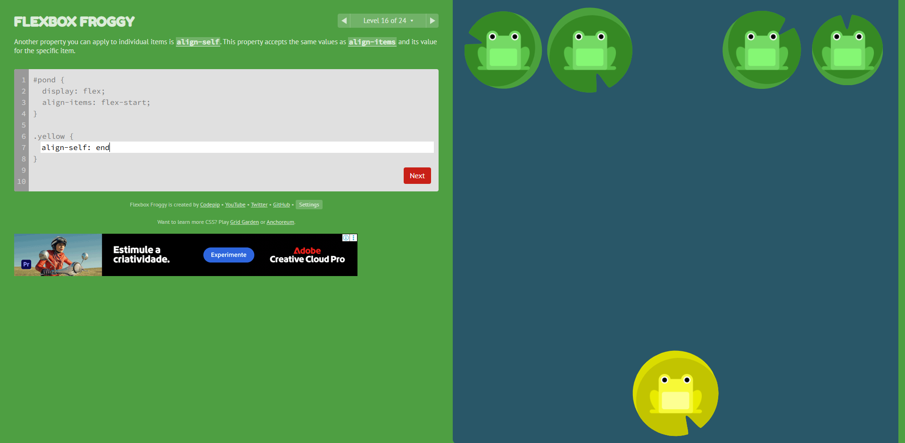

Os sapos estavam originalmente na horizontal, para os deixar na vertical foi utilizado a tag flex-direction: row; e para os deixar em baixo, sobre as vitórias régias, foi usado justify-content: flex-end;
O sapo amarelo estava originalmente no alto, ao centro, para o posicionar na vitória régia abaixo, bastava utilizar align-self: end; na classe do sapo amarelo.